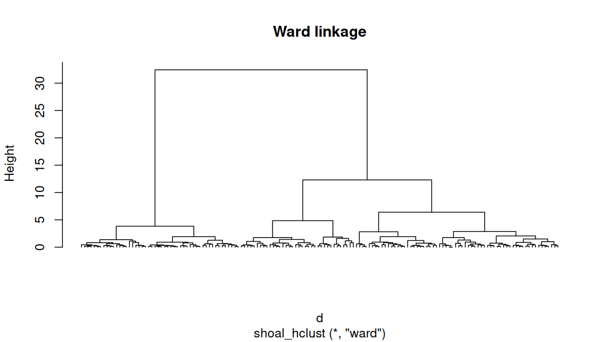
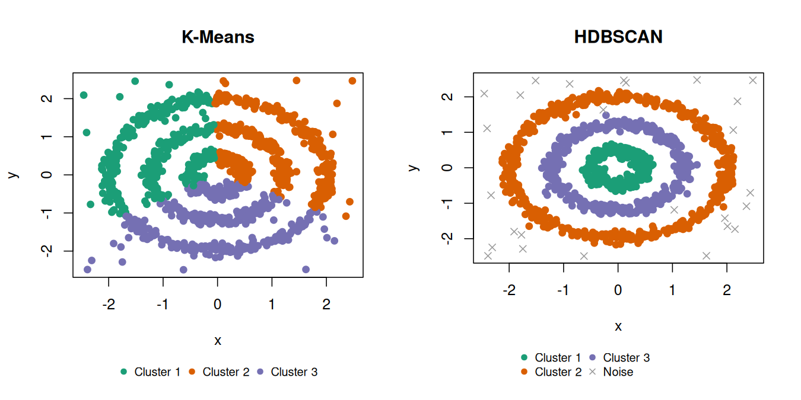
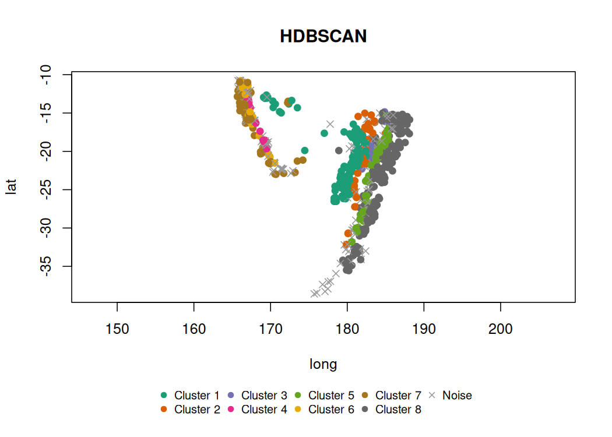

shoal is a small, foundational set of clustering algorithms with Rust backends, presented behind one consistent interface. Every algorithm takes a numeric matrix or data frame, returns an object of the shared shoal_clustering class, and prints and plots the same way. Noise points are NA in the cluster vector, so downstream code never has to know which algorithm produced a result.
| Function | Algorithm | Backend | Reach for it when |
|---|---|---|---|
shoal_kmeans() |
k-means | linfa | Clusters are roughly spherical and you know how many to expect. |
shoal_gmm() |
Gaussian mixture | linfa | Clusters are elliptical, or you want soft memberships and BIC(). |
shoal_dbscan() |
DBSCAN | petal-clustering | Clusters have arbitrary shape and a common density. |
shoal_hdbscan() |
HDBSCAN | petal-clustering | Clusters have arbitrary shape and varying density. |
shoal_hclust() |
Agglomerative hierarchical | kodama | You want a dendrogram and R’s cutree() ecosystem. |
shoal_evoc() |
EVoC | In-tree port of EVoC | Rows are embedding vectors; you want every granularity at once. |
shoal_dist() builds distance matrices, and shoal_silhouette() and shoal_metrics() score a clustering so the number of clusters can be chosen on evidence. Distance matrices and dendrograms are returned as R’s own dist and hclust classes, so cutree(), as.dendrogram() and cmdscale() work without glue.
Installation
# install.packages("pak")
pak::pak("belian-earth/petalcluster")Requires a working Rust toolchain (rustc >= 1.81).
Three vignettes go further than this page: vignette("shoal") introduces each algorithm in turn with a picture of what it finds, vignette("umap") shows what embedding wide data with UMAP does to each of them, and vignette("evoc") clusters real sentence embeddings with EVoC and compares it with the alternatives.
A worked example
Every algorithm shares the same shape of call and result. Take the four measurements in iris as a matrix, and ask k-means for three clusters.
library(shoal)
x <- as.matrix(iris[, 1:4])
km <- shoal_kmeans(x, k = 3L)
km
#>
#> ── K-Means Clustering
#> Parameters: k = 3, init = kmeans++, n_runs = 10, seed = 1
#> Clusters: 3, Noise points: 0
#> Within-cluster sum of squares: 78.851
#> Cluster sizes: 50, 38, 62The result is a list. cluster is the assignment, data is the matrix the model was fitted to, and params records the call, so a result can be inspected long after the code that produced it has scrolled away.
str(km$cluster)
#> int [1:150] 1 1 1 1 1 1 1 1 1 1 ...
km$centroids
#> Sepal.Length Sepal.Width Petal.Length Petal.Width
#> [1,] 5.006000 3.428000 1.462000 0.246000
#> [2,] 6.850000 3.073684 5.742105 2.071053
#> [3,] 5.901613 2.748387 4.393548 1.433871Choosing the number of clusters
k is the central modelling decision, so shoal does not guess it. Fit across a range and compare. shoal_metrics() reports the Calinski-Harabasz index (higher is better) and the Davies-Bouldin index (lower is better) for any partition; shoal_gmm() results have a logLik() method, so BIC() works on them directly.
ks <- 2:6
indices <- do.call(rbind, lapply(ks, function(k) {
shoal_metrics(shoal_kmeans(x, k = k))
}))
indices$bic <- vapply(ks, function(k) BIC(shoal_gmm(x, k = k)), numeric(1))
indices
#> n k calinski_harabasz davies_bouldin bic
#> 1 150 2 513.9245 0.4042928 574.0178
#> 2 150 3 561.6278 0.6619715 580.8594
#> 3 150 4 530.4871 0.7757009 629.7790
#> 4 150 5 495.5415 0.8059652 670.0892
#> 5 150 6 473.8506 0.9141580 714.9977The indices disagree, which is the honest answer for this data. Davies-Bouldin and BIC favour two clusters, because setosa is clearly separated while versicolor and virginica overlap; Calinski-Harabasz peaks at the three species. Choosing between those readings is a modelling decision, which is why shoal leaves it to you.
Silhouette widths give the same verdict per observation. They need a distance matrix, which shoal_dist() computes in Rust.
d <- shoal_dist(x)
sil <- shoal_silhouette(d, km)
head(sil)
#> cluster neighbour width
#> 1 1 3 0.8529551
#> 2 1 3 0.8154948
#> 3 1 3 0.8293151
#> 4 1 3 0.8050139
#> 5 1 3 0.8493016
#> 6 1 3 0.7482804
attr(sil, "avg_width")
#> [1] 0.552819Soft memberships
A Gaussian mixture gives every observation a probability of belonging to each component rather than a single label. cluster is the row-wise maximum, for consistency with the other algorithms, and posterior holds the full matrix.
gm <- shoal_gmm(x, k = 3L)
gm
#>
#> ── Gaussian Mixture Clustering
#> Parameters: k = 3, init = kmeans, n_runs = 1, seed = 1
#> Clusters: 3, Noise points: 0
#> Log-likelihood: -180.196, BIC: 580.859
#> Mixing proportions: 0.333, 0.365, 0.301
round(head(gm$posterior), 3)
#> [,1] [,2] [,3]
#> [1,] 1 0 0
#> [2,] 1 0 0
#> [3,] 1 0 0
#> [4,] 1 0 0
#> [5,] 1 0 0
#> [6,] 1 0 0Hierarchical clustering
shoal_hclust() accepts the distance matrix from shoal_dist(), or raw data, and returns a standard hclust object.
hc <- shoal_hclust(d, method = "ward")
hc
#>
#> Call:
#> shoal_hclust(d = d, method = "ward")
#>
#> Cluster method : ward
#> Distance : euclidean
#> Number of objects: 150
table(cutree(hc, k = 3), iris$Species)
#>
#> setosa versicolor virginica
#> 1 50 0 0
#> 2 0 49 15
#> 3 0 1 35
plot(hc, labels = FALSE, hang = -1, main = "Ward linkage")
The "ward" method here is R’s "ward.D2"; see ?shoal_hclust for how each linkage maps onto stats::hclust().
Predicting new observations
Algorithms with a notion of a cluster centre can assign new rows. Fit on half of the data and predict the rest.
train <- x[seq(1, nrow(x), by = 2), ]
test <- x[seq(2, nrow(x), by = 2), ]
fit <- shoal_kmeans(train, k = 3L)
table(predicted = predict(fit, test), species = iris$Species[seq(2, nrow(x), by = 2)])
#> species
#> predicted setosa versicolor virginica
#> 1 0 24 7
#> 2 0 1 18
#> 3 25 0 0The density-based algorithms have no predict() method, because the capability genuinely does not exist for them.
Clusters of arbitrary shape
Classical methods assume convex, evenly sized clusters. The bundled rings data breaks that assumption: three concentric rings plus uniform noise. Density-based methods find the rings and label the noise, without being told how many groups to look for.
par(mfrow = c(1, 2))
plot(shoal_kmeans(rings, k = 3L))
plot(shoal_hdbscan(rings, min_cluster_size = 15L, min_samples = 5L))
Both plots come from the same plot() method: the shared class is what makes the comparison a one-liner. Noise points are drawn as grey crosses.
HDBSCAN also returns GLOSH outlier scores, one per observation, and accepts metric = "cosine" for directional data.
hdb <- shoal_hdbscan(rings, min_cluster_size = 15L, min_samples = 5L)
hdb
#>
#> ── HDBSCAN Clustering
#> Metric: "euclidean"
#> Parameters: alpha = 1, min_samples = 5, min_cluster_size = 15, boruvka = TRUE
#> Clusters: 3, Noise points: 26
#> GLOSH outlier scores: median 0.079, max 0.965
summary(hdb$outlier_scores)
#> Min. 1st Qu. Median Mean 3rd Qu. Max.
#> 0.0000 0.0000 0.0791 0.1783 0.3176 0.9654Plotting more than two dimensions
With more than two columns, plot() draws a scatter plot matrix. Pass xcol and ycol to pick a single pair instead. Here R’s quakes data, 1,000 seismic events near Fiji, clustered on location, depth and magnitude, is plotted by longitude and latitude.
quakes_hdbscan <- shoal_hdbscan(quakes[, c("lat", "long", "depth", "mag")])
quakes_hdbscan
#>
#> ── HDBSCAN Clustering
#> Metric: "euclidean"
#> Parameters: alpha = 1, min_samples = 15, min_cluster_size = 15, boruvka = TRUE
#> Clusters: 8, Noise points: 199
#> GLOSH outlier scores: median 0.238, max 0.906
plot(quakes_hdbscan, xcol = "long", ycol = "lat", asp = 1)
Embedding vectors
shoal_evoc() is for a different kind of input: rows that are embedding vectors, such as the output of a text or image model, where cosine geometry is the right model and the number of rows runs to thousands or millions. EVoC builds a nearest-neighbour graph, learns a compact node embedding from it and clusters that at several granularities at once. Every layer is returned, with a persistence score, and layer chooses which one populates cluster.
# Synthetic embeddings: eight topics of unequal size as directions in 48
# dimensions, plus 100 scattered points that belong to none of them.
set.seed(1)
sizes <- c(400, 300, 250, 200, 150, 100, 60, 40)
centres <- matrix(runif(length(sizes) * 48, -1, 1) * 0.6, nrow = length(sizes))
emb <- rbind(
centres[rep(seq_along(sizes), times = sizes), ] +
matrix(rnorm(sum(sizes) * 48, sd = 0.1), ncol = 48),
matrix(runif(100 * 48, -1, 1) * 0.6, ncol = 48)
)
truth <- c(rep(seq_along(sizes), times = sizes), rep(NA, 100))
ev <- shoal_evoc(emb, min_cluster_size = 15L)
ev
#>
#> ── EVoC Clustering
#> Metric: "cosine"
#> Parameters: n_neighbors = 15, noise_level = 0.5, min_cluster_size = 15,
#> min_samples = 5, n_epochs = 50, seed = 1
#> Clusters: 8, Noise points: 7
#> Layers (finest first, ✔ = selected):
#> 1: 10 clusters, 371 noise, persistence 0
#> ✔ 2: 8 clusters, 7 noise, persistence 346.8The finest layer over-fragments and marks hundreds of points as noise; the most persistent layer, selected by default, is the useful one. Comparing it with the truth shows every topic recovered exactly, down to the one with 40 members. The scattered points are the weak spot: most are absorbed into the nearest topic rather than flagged, since at this size a handful of stray directions rarely forms a density gap of its own.
table(cluster = ev$cluster, truth, useNA = "ifany")
#> truth
#> cluster 1 2 3 4 5 6 7 8 <NA>
#> 1 0 0 0 200 0 0 0 0 9
#> 2 0 300 0 0 0 0 0 0 9
#> 3 0 0 0 0 0 0 60 0 4
#> 4 0 0 0 0 0 0 0 40 3
#> 5 400 0 0 0 0 0 0 0 7
#> 6 0 0 0 0 150 0 0 0 18
#> 7 0 0 0 0 0 100 0 0 7
#> 8 0 0 250 0 0 0 0 0 36
#> <NA> 0 0 0 0 0 0 0 0 7Every layer stays available on the result, so a different granularity is an index away rather than a refit.
vapply(ev$layers, function(l) length(unique(l[!is.na(l)])), integer(1))
#> [1] 10 8
ev$persistence
#> [1] 0.0000 346.7937The upstream default min_cluster_size = 5 is calibrated for large inputs and over-fragments collections this small; raising it is the first thing to try.
Performance
Every algorithm is benchmarked against the best R alternative and, where one exists, the Python one, at matched settings: the same k, restarts, iteration cap and linkage. Timings are medians of three runs on 20 cores, from 500 to 50,000 points, on Gaussian blobs in 2 and 10 dimensions and, for EVoC, on embedding-like data in 48. Scripts and data generation are in bench/.

What the panels show, at 50,000 points unless noted:
- DBSCAN: 6 to 9 times faster than the dbscan package and 1.5 to 5 times faster than scikit-learn, the gap growing with dimension.
- HDBSCAN: 20 times faster than scikit-learn in 2 dimensions and 2 times in 10. The dbscan package builds a full distance matrix and is 40 times slower at 20,000 points, its largest feasible size here.
- k-means: level with base R’s Hartigan-Wong in 2 dimensions and 2 times faster in 10, with identical within-cluster sums of squares. scikit-learn’s times are erratic at these sizes because its OpenMP threading oversubscribes a 20-core machine.
- Gaussian mixture: 20 to 170 times faster than mclust, which fits a hierarchical initialisation first, and level with scikit-learn from about 5,000 points, having been several times faster below that.
- Ward: 1.3 to 1.4 times faster than base R and level with SciPy, which edges it in two dimensions. All three run the same nearest-neighbour-chain algorithm, so the differences are in computing the distances that feed it. Runs stop at 20,000 points, where the distance matrix alone is 1.6 GB.
- EVoC: level with the reference implementation from about 20,000 points, and several times faster below that, where the reference’s compiled kernels have not amortised. The reference here runs on 20 numba threads.
Two things to know when the data is wide:
- The spatial indexes behind DBSCAN and HDBSCAN degrade as dimension grows, as they do everywhere. Above a few dozen columns, HDBSCAN’s default Boruvka tree search is slower than the plain alternative, so pass
boruvka = FALSEthere. See?shoal_hdbscan. - For high-dimensional embedding vectors,
shoal_evoc()is the right tool and is orders of magnitude faster than HDBSCAN on the raw vectors.
Threads
The Rust backends run their parallel stages on a thread pool owned by the package: EVoC’s neighbour search, spanning tree and node embedding; DBSCAN’s neighbour queries; HDBSCAN’s core distances and spanning tree; k-means’ assignment step; shoal_dist() and shoal_silhouette(). By default it uses every logical core. shoal_threads(n) resizes it for the session and shoal_threads() reports the current size; options(shoal.threads = n) or RAYON_NUM_THREADS set the default before the package loads. Results never depend on the thread count.
Development notes
devtools::load_all() compiles the Rust code without optimisation, because pkgbuild sets DEBUG while it builds. That is fine for correctness but timings from a load_all() session are misleading, by an order of magnitude or more. For anything performance-related install the package first:
After adding or changing a #[extendr] function, regenerate R/extendr-wrappers.R before devtools::document(); with the package’s current rextendr configuration that is rextendr:::make_wrappers("shoal", "shoal", "R/extendr-wrappers.R", use_symbols = TRUE) from a load_all() session. Keep the Rust doc comments on those bindings as plain // comments, or roxygen will document the internal wrappers.
The EVoC port lives in src/rust/evoc-core/; its parity suite against the Python reference is under evoc-port/ and runs with cargo test --release from evoc-port/parity/.
Acknowledgements
The algorithms are the work of others. Density-based clustering is bound to petal-clustering by Petabi; hierarchical clustering to kodama, a Rust port of fastcluster; k-means and Gaussian mixtures to linfa; and EVoC to a Rust port of the reference implementation by Leland McInnes and the Tutte Institute, validated against fixtures generated from it. shoal is an R interface to their work.